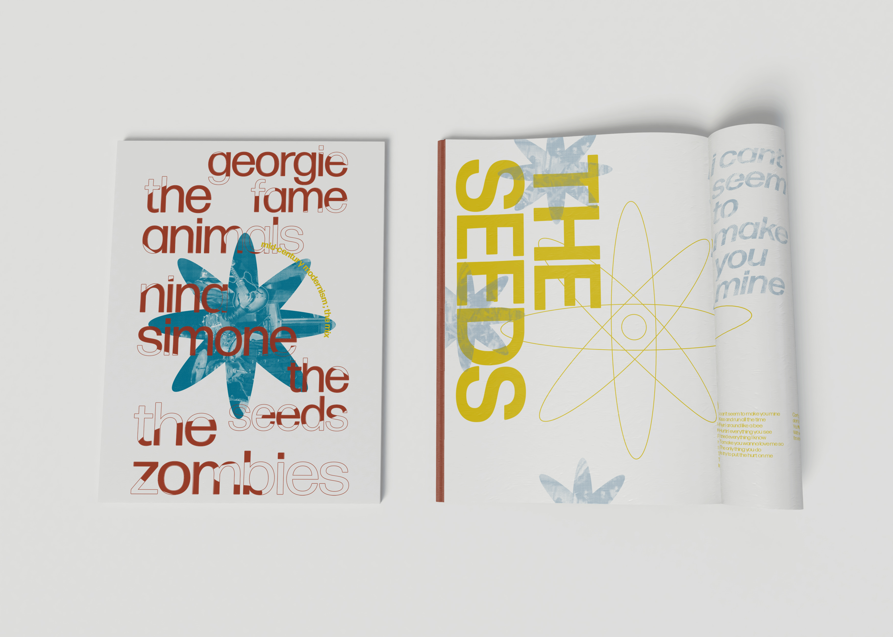
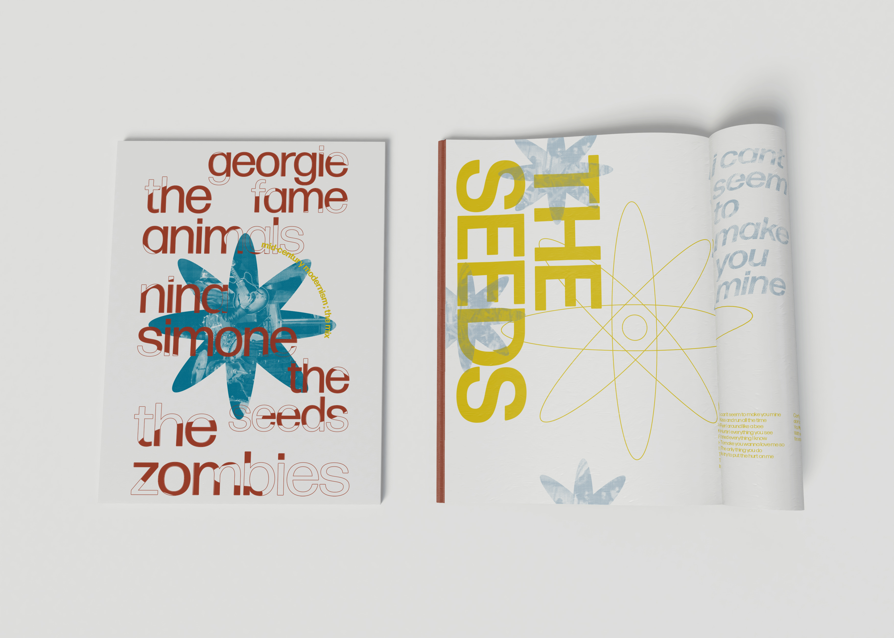

Digital Narrative, 2022
The "Digital Narrative" project is an experimental web-coding project that explores the extensive abilities of web-coding through animation, typography, and interactability.
The narrative being explored is the abstract concept of intrusive thoughts, more specifically regarding weather. The page is built to be consumed aesthetically as a web-design exploration rather than for functional use.
programs used: sublime developing software

 
